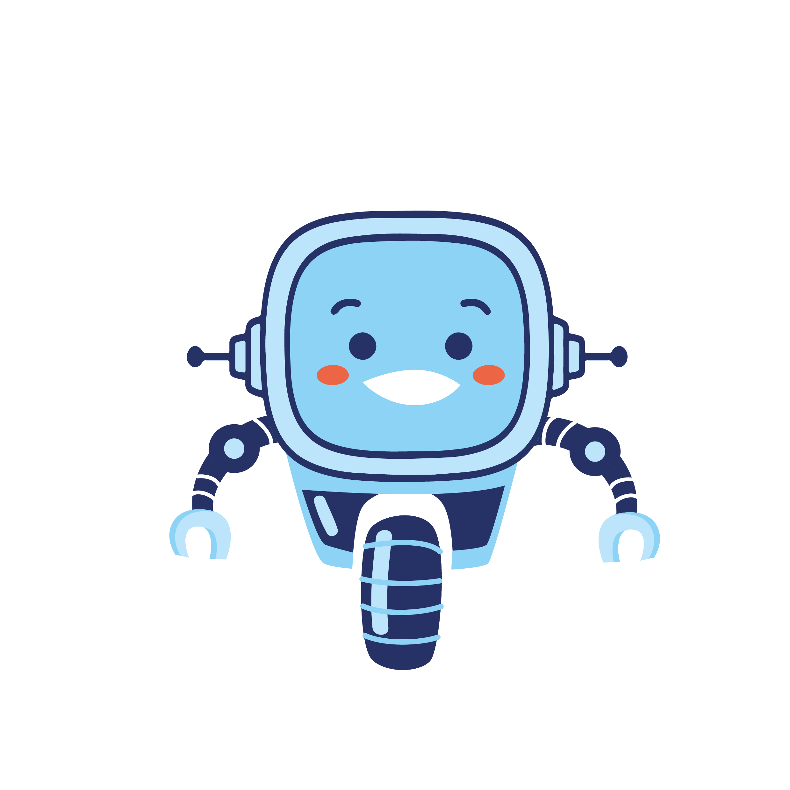
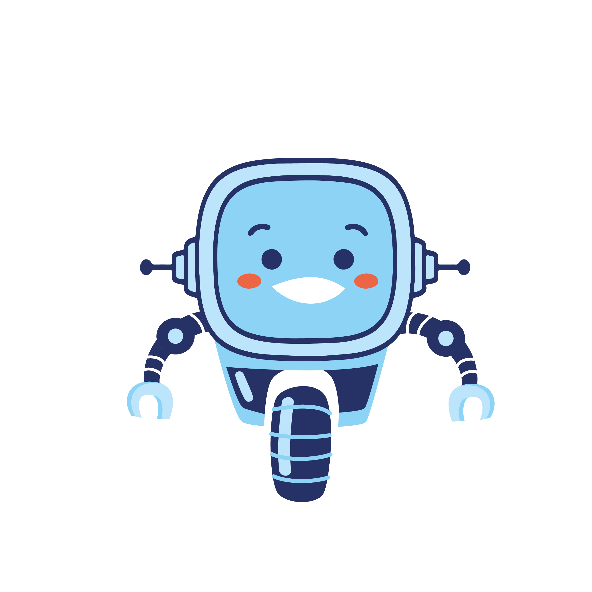
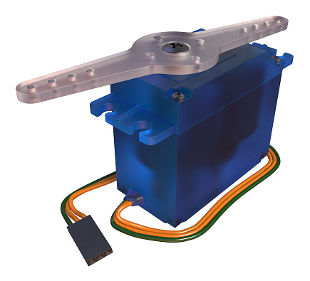
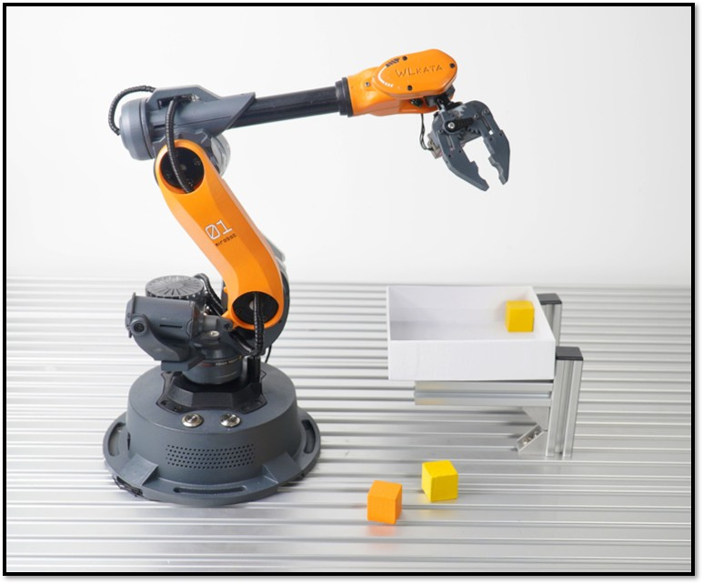
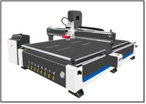

Vamos a aprender todo lo necesario para conseguir que nuestro robot se mueva gracias a un pequeño servomotor de rotación continua.

Vamos a aprender todo lo necesario para conseguir que nuestro robot se mueva gracias a un pequeño servomotor de rotación continua.
Hemos aprendido que la placa micro:bit detecte luz o encienda LEDs de acuerdo a una programación realizada; sin embargo, ¿cómo te imaginas tu robot: estático o en movimiento? Seguramente has imaginado que se desplaza, se acerca o aleja de ti, mueve un brazo u otra parte...
¿Cómo crees que conseguiremos que un robot se mueva?

El servo cuenta con tres cables, dos son para alimentación y el tercero es para una señal de control.
Podemos utilizar cables cocodrilo para conectar el servo a la micro:bit. Casi siempre el color del cableado es naranja = señal, rojo = 3V y marrón = tierra (GND)
 Normalmente la placa microbit suministra energía eléctrica para los componentes conectados a él; sin embargo, el servomotor requiere mayor energía por lo que utilizaremos un portapilas para 4 baterías de 1.5 voltios. Esto permitirá suministrar las suficiente energía para que el microbit pueda controlar sin problema el servomoto de rotación contínua.
Normalmente la placa microbit suministra energía eléctrica para los componentes conectados a él; sin embargo, el servomotor requiere mayor energía por lo que utilizaremos un portapilas para 4 baterías de 1.5 voltios. Esto permitirá suministrar las suficiente energía para que el microbit pueda controlar sin problema el servomoto de rotación contínua.
En la siguiente tabla se encuentra un par de ejemplos en donde se utilizan los servomotores.
| Nombre | Imagen |
| Brazo robot |  |
| Máquina CNC |  |
Obra publicada con Licencia Creative Commons Reconocimiento Compartir igual 4.0